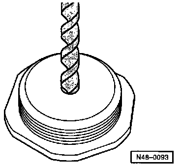

Power Steering Gear, Adjusting With New Rack
Power steering gear, adjusting with new rackTRW
If a new steering rack has been installed, then the steering play must be adjusted as follows:

Drill a 5.1mm diameter hole in center of adjusting screw (center on reverse side).
Thoroughly clean adjustment nut.
Center rack by measuring left and right hand overhang.
Install thrust piece and spring in housing (if not already installed).
Turn adjusting screw and lock nut into housing until markings are covered.

Attach dial indicator and set to "0" position with approx. 1mm (0.039 in) preload.
Make sure that the dial indicator does not stick, and its face is not damaged or deformed.
1 3315/8
2 3315/9
3 3315/1
4 Dial gauge holder VW 387
Install right hand tie rod hand-tight.
Turn rack radially by hand (upper right section of image) and measure run out on dial indicator.
Max. run-out: 0.10mm (0.0039 in)
If the run out is greater than 0.10mm (0.0039 in), turn adjusting nut out of housing slightly.
Tighten lock-nut.
Re-check run out and repeat adjustment if necessary.
Remove dial indicator.

Sealing Hole in Adjustment Nut with Plug
Insert clip -2- with seal -1- into hole.
Place one drop of sealant in clip hole (arrow) and press plug -3- into clip.
Sealant Part Number: AMV 188 001 02.
Install tie rods. Service and Repair